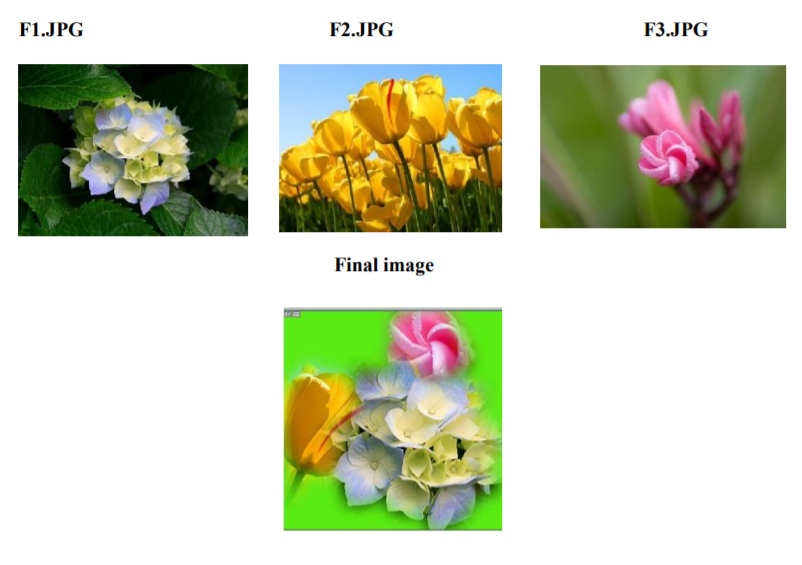

| HOME |
|---|
| BACK |
| PROCEDURE TO USE APPROPRIATE TOOL(S) FROM THE TOOLBOX, CUT THE OBJECTS FROM 3 FILES (F1.JPG, F2.JPG & F3.JPG); ORGANISE THEM IN A SINGLE FILE AND APPLY FEATHER EFFECTS. |
STEPS:-
1. Open adobe Photoshop 7.0-> file->open f1.jpg.
2. Select the flower in it using lasso tool ->right click->feather-> give feather radius 20 pixels.
3. Go to edit-> copy-> open a new file with height 500 and width also 500->paste the flower.
4. Repeat the same procedure for f2.jpg and f3.jpg-> select the flower ->give feather effect-> edit->copy-> open a new file-> paste.
5. You will get o final single file with 3 flowers from different files.
6. Save the new file
OUTPUT:-
